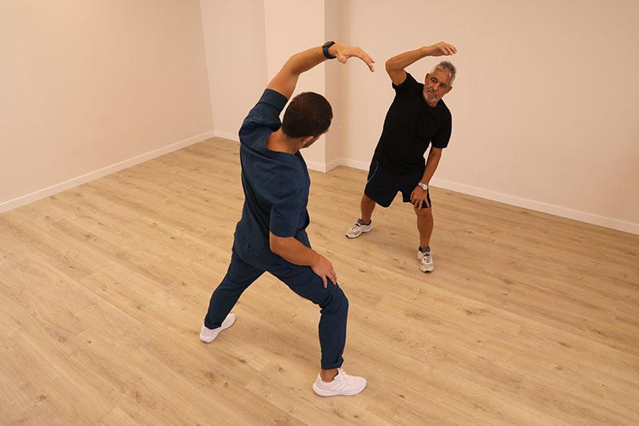
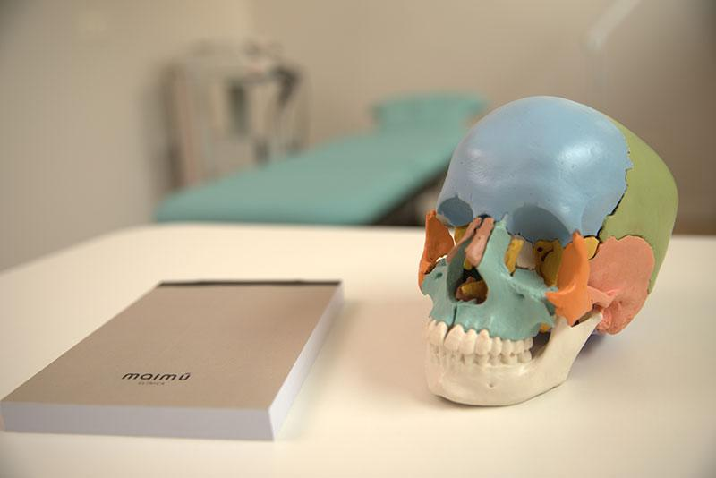
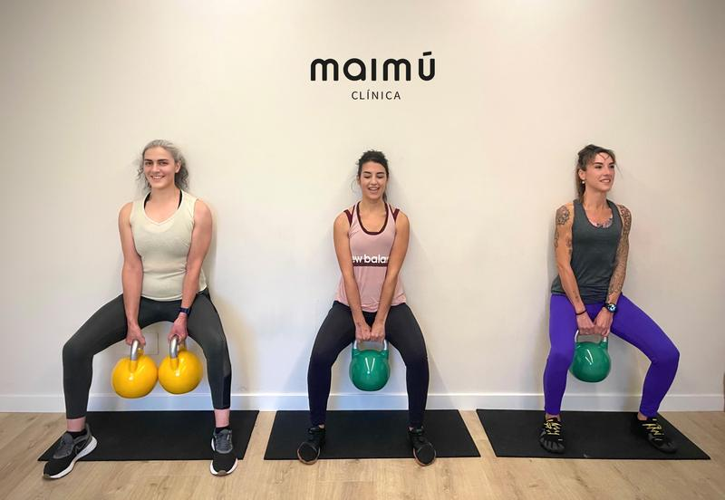
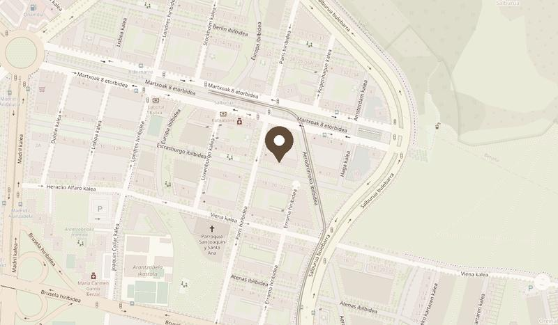

Con mimo, Clínica Maimú.
Fisioterapia avanzada ecoguiada, osteopatía y rehabilitación en Salburua, Vitoria-Gasteiz.
Horario
Lunes - viernes
de 9:00 a 21:00
Paseo de Estrasburgo 15, bajo · Salburua, Vitoria-Gasteiz
Tratamientos
Fisioterapeutas y osteópatas colegiados. Toca un tratamiento para ver en qué consiste.

Terapia manual
El pilar de nuestros tratamientos: las manos del fisioterapeuta para evaluar y tratar músculos, articulaciones y tejidos blandos.
Saber más
Fisioterapia ecoguiada
Con ecografía en tiempo real vemos músculos, tendones y ligamentos para saber dónde está el problema y tratarlo con precisión.
Saber más
Punción seca
Agujas finas, sin medicamento, sobre los puntos gatillo: ayuda a aliviar el dolor muscular y a mejorar el movimiento.
Saber más
Indiba
Radiofrecuencia que estimula la regeneración de los tejidos, reduce el dolor y la inflamación y mejora la circulación.
Saber más
Campos magnéticos superinductivos
Tecnología no invasiva de última generación que estimula de forma controlada músculos y nervios.
Saber más
Ondas de choque focales
Ondas acústicas de alta energía para problemas de tendones y tejidos, incluidas algunas calcificaciones.
Saber más
Fisioterapia deportiva avanzada
Prevenir, tratar y recuperar lesiones del deporte, y volver a rendir.
Saber más
Dolor orofacial y ATM
Unidad especializada en el dolor de cara y mandíbula y en los problemas de la articulación temporomandibular.
Saber más
Osteopatía
Una visión global del cuerpo para tratar la causa de las molestias, no solo los síntomas.
Saber más
Rehabilitación cardíaca
Fase III o de mantenimiento, supervisada y monitorizada en cada sesión.
Saber más
Nutrición
Atención personalizada que completa tu tratamiento.
Saber másCómo trabajamos
Cada paciente sigue un camino claro, desde que llega hasta que vuelve a moverse con libertad.
Exploración y ecografía en tiempo real para encontrar el origen del dolor.
Terapia manual, fisioterapia ecoguiada e invasiva, osteopatía y tecnología (Indiba, ondas de choque, campos magnéticos).
Ejercicio terapéutico, fuerza y pilates, adaptados a ti.
Seguimiento y clases para que la lesión no vuelva.
Durante todo el proceso revisamos tu evolución con ecografía y ajustamos el tratamiento.
Clases dirigidas
El mejor tratamiento es la prevención. Plazas limitadas: reserva por WhatsApp o llamando al 662 603 624.
- PilatesFortalece el core, mejora la flexibilidad, la postura y el equilibrio y ayuda a reducir el estrés. Clases para diferentes niveles.
- Pilates para embarazadasPilates adaptado al embarazo. Lunes y miércoles, de 16:00 a 17:00.
- Entrenamiento de fuerzaGuiado por profesionales: ayuda a regular el metabolismo, fortalece músculos y huesos y mejora la salud cardiovascular.
- Rehabilitación cardíacaSesiones supervisadas de la fase III (mantenimiento), con tensión y frecuencia cardíaca monitorizadas.

| Lunes | Martes | Miércoles | Jueves | Viernes | |
|---|---|---|---|---|---|
| 08:00–09:00 | Entren. fuerza | Entren. fuerza | |||
| 09:00–10:00 | Pilates | Entren. fuerza | Pilates | Entren. fuerza | |
| 09:30–10:30 | Rehab. cardíaca | ||||
| 10:00–11:00 | Rehab. cardíaca | Entren. fuerza | Rehab. cardíaca | Entren. fuerza | |
| 11:00–12:00 | Entren. fuerza | Entren. fuerza | |||
| 16:00–17:00 | Pilates embarazadas | Entren. fuerza | Pilates embarazadas | Entren. fuerza | |
| 17:00–18:00 | Pilates | Entren. fuerza | Pilates | Entren. fuerza | Entren. fuerza |
| 18:00–19:00 | Entren. fuerza | Entren. fuerza | Entren. fuerza | Entren. fuerza | |
| 19:00–20:00 | Pilates | Pilates | Pilates | Pilates | |
| 20:00–21:00 | Entren. fuerza | Entren. fuerza |
Lunes
- 08:00–09:00Entren. fuerza
- 09:00–10:00Pilates
- 10:00–11:00Rehab. cardíaca
- 11:00–12:00Entren. fuerza
- 16:00–17:00Pilates embarazadas
- 17:00–18:00Pilates
- 18:00–19:00Entren. fuerza
- 19:00–20:00Pilates
- 20:00–21:00Entren. fuerza
Martes
- 09:00–10:00Entren. fuerza
- 10:00–11:00Entren. fuerza
- 16:00–17:00Entren. fuerza
- 17:00–18:00Entren. fuerza
- 18:00–19:00Entren. fuerza
- 19:00–20:00Pilates
Miércoles
- 08:00–09:00Entren. fuerza
- 09:00–10:00Pilates
- 10:00–11:00Rehab. cardíaca
- 11:00–12:00Entren. fuerza
- 16:00–17:00Pilates embarazadas
- 17:00–18:00Pilates
- 18:00–19:00Entren. fuerza
- 19:00–20:00Pilates
- 20:00–21:00Entren. fuerza
Jueves
- 09:00–10:00Entren. fuerza
- 10:00–11:00Entren. fuerza
- 16:00–17:00Entren. fuerza
- 17:00–18:00Entren. fuerza
- 18:00–19:00Entren. fuerza
- 19:00–20:00Pilates
Viernes
- 09:30–10:30Rehab. cardíaca
- 17:00–18:00Entren. fuerza
Equipo
Fisioterapeutas y osteópatas colegiados, con estudios universitarios, posgrados y formación continua.
Instalaciones

Contacto
DirecciónPaseo de Estrasburgo 15, bajo, 01002 Vitoria-Gasteiz (Salburua)
Teléfono945 27 19 05
WhatsApp662 603 624
HorarioLunes a viernes, de 9:00 a 21:00
Pedir cita por WhatsApp